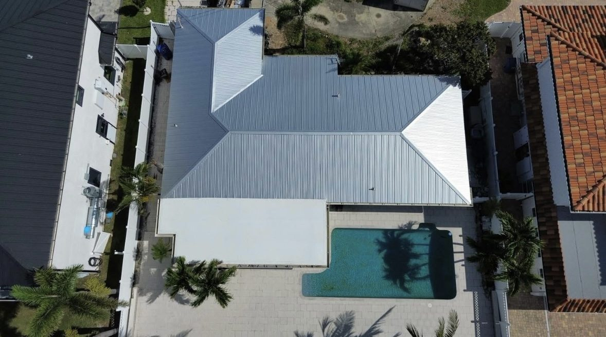
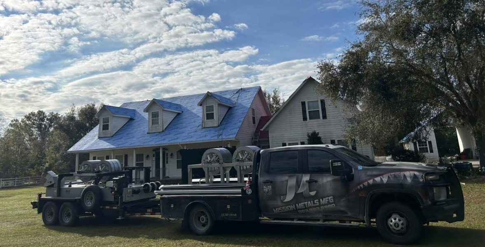

Whether your house sits off Spring Hill Drive, near Mariner Boulevard or out by the US-19 corridor, we manufacture the metal roofing and hand your project to a licensed installer who works in Spring Hill.
Spring Hill grew into one of the largest communities in Hernando County as block homes went up street after street, and a lot of those houses are now on their second or third shingle roof. Many owners are deciding this time to move to metal roofing instead of starting the shingle cycle over again.
Mission Metals Manufacturing is the supplier, not the roofing crew. We roll-form standing seam, 5V crimp and PBR metal roofing along with matching trim. When you call, we connect you with an independent licensed roofer who serves Spring Hill and builds with our materials.
Installers we refer are independent, licensed Florida roofing contractors. Your inspection, price, contract and workmanship are all between you and that contractor.
Installed to the Florida Building Code fastening pattern, metal roofing is designed to resist the uplift of tropical-storm winds blowing in off the Gulf.
Metal doesn't hold moisture like shingle granules, which helps limit the dark streaking common on roofs near the coast.
Light, reflective finishes bounce back much of the sun that bakes a single-story ranch roof all afternoon.
Standing seam and 5V crimp both suit the hip and gable roofs found throughout Spring Hill subdivisions.
County permitting: Spring Hill is not an incorporated city, so most reroofs here are permitted through Hernando County rather than a municipal building office. Your licensed installer should confirm and pull the permit.
HOA guidelines: Some Spring Hill neighborhoods have homeowners associations with rules on roof color or style. Check your HOA before picking a finish.
Older decking: Homes built decades ago may have tired plywood under the shingles. Ask the installer to include a decking inspection in your metal roofing estimate.

Copper-tone standing seam, installed by a licensed contractor with our panels.

Silver standing seam roof installed by a licensed local contractor using Mission Metals materials.

On-site roll-forming of standing seam panels to exact lengths for the installing contractor.
Real Mission Metals photos. Mission Metals manufactures and supplies the metal roofing; roofs are installed by independent licensed contractors. Homes shown are in Florida and not necessarily in Spring Hill.
An independent, licensed roofing contractor who works in Spring Hill. Mission Metals manufactures and supplies the metal roofing; the contractor installs it and contracts with you.
Spring Hill is an unincorporated community, so most addresses are permitted through the Hernando County Building Division rather than a city office. Your installer pulls the permit.
In most cases, yes. Many Spring Hill homes are single-story concrete block with hip or gable roofs. The installer checks pitch, decking and ventilation and recommends standing seam or 5V crimp.
Possibly. Deed-restricted communities in Spring Hill often have architectural guidelines on roof material and color. Review your covenants and get approval before the job is scheduled.
Homes west toward US-19 and Weeki Wachee are closer to the coast than those east of the Suncoast Parkway. The Florida Building Code sets wind requirements by location and exposure, and your installer specifies fastening for your address.
The dark streaks on many Spring Hill shingle roofs come from algae thriving in coastal humidity. Coated metal roofing doesn't feed that growth the way shingle granules do.
Search their name or license number at myfloridalicense.com. We only refer contractors holding an active Florida roofing license.
Yes. We connect owners across Hernando County, including Brooksville, Weeki Wachee, Masaryktown and Ridge Manor, and nearby Hudson just south of the county line.
How metal roofs handle Hernando County wind, rain and lightning, and what to ask your installer.
Profile, gauge, tear-off, roof shape and access: the factors behind a local quote.
Give us a call, describe your house, and we'll pass it to a licensed local installer who uses Mission Metals metal roofing.